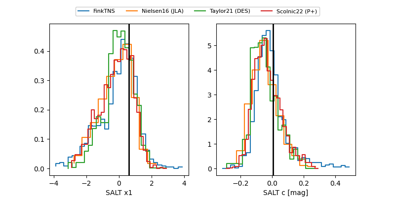

FINK: ZTF25abkuddd
Lasair: ZTF25abkuddd
ALeRCE: ZTF25abkuddd
TNS: 2025vju
YSE: 2025vju
ZTF25abkuddd (ztf,fink)
2025vju (tns,yse)
equatorial (ra, dec) = (41.1119,+79.45329)
galactic (l, b) = (128.1513,+17.74529)

last ztfg=19.72, ztfr=20.24
9 ztfg, 12 ztfr detections